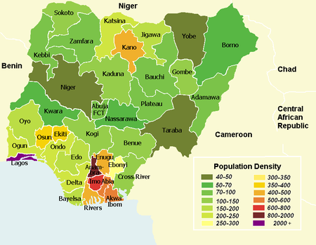

HOME STATES IN NIGERIA ARMED FORCES CONTACTS
REPUBLIC OF NIGERIA

HAPPY INDEPENDENCE NIGERIA @ 61
Nigeria, officially the Federal Republic of Nigeria, is a country in West Africa. It is the most populous country in Africa; geographically situated between the Sahel to the north, and the Gulf of Guinea to the south in the Atlantic Ocean; covering an area of 923,769 square kilometers, with a population of over 211 million. It borders Niger in the north, Chad in the northeast, Cameroon in the east, and Benin in the west. Nigeria is a federal republic comprising 36 states and the Federal Capital Territory, where the capital, Abuja, is located. The largest city in Nigeria is Lagos, one of the largest metropolitan areas in the world and second largest in Africa.
Nigeria has been home to several indigenous pre-colonial states and kingdoms since the second millennium BC, with the Nok civilization in the 15th century BC marking the first internal unification in the country. The modern state originated with British colonialization in the 19th century, taking its present territorial shape with the merging of the Southern Nigeria Protectorate and Northern Nigeria Protectorate in 1914 by Lord Lugard. The British set up administrative and legal structures while practising indirect rule through traditional chiefdoms. Nigeria became a formally independent federation on October 1, 1960. It experienced a civil war from 1967 to 1970, followed by a succession of democratically-elected civilian governments and military dictatorships, until achieving a stable democracy in the 1999 presidential election; the 2015 election was the first time an incumbent president had lost re-election.
Nigeria is a multinational state inhabited by more than 250 ethnic groups speaking 500 distinct languages, all identifying with a wide variety of cultures. The three largest ethnic groups are the Hausa–Fulani in the north, Yoruba in the west, and Igbo in the east, together comprising over 60% of the total population. The official language is English, chosen to facilitate linguistic unity at the national level. Nigeria's constitution ensures freedom of religion and is home to some of the world's largest Muslim and Christian populations, simultaneously. Nigeria is divided roughly in half between Muslims, who live mostly in the north, and Christians, who live mostly in the south; indigenous religions, such as those native to the Igbo and Yoruba ethnicities, are in the minority.
Nigeria's economy is the largest in Africa, the 27th-largest in the world by nominal GDP, and 25th-largest by PPP. Nigeria is often referred to as the Giant of Africa owing to its large population and economy and is considered to be an emerging market by the World Bank. It is a regional power in Africa, a middle power in international affairs, and is an emerging global power. However, the country ranks very low in the Human Development Index and remains one of the most corrupt nations in the world. Nigeria is a founding member of the African Union and a member of many international organizations, including the United Nations, the Commonwealth of Nations, the Economic Community of West African States, and OPEC. It is also a member of the informal MINT group of countries, and is one of the Next Eleven economies.
